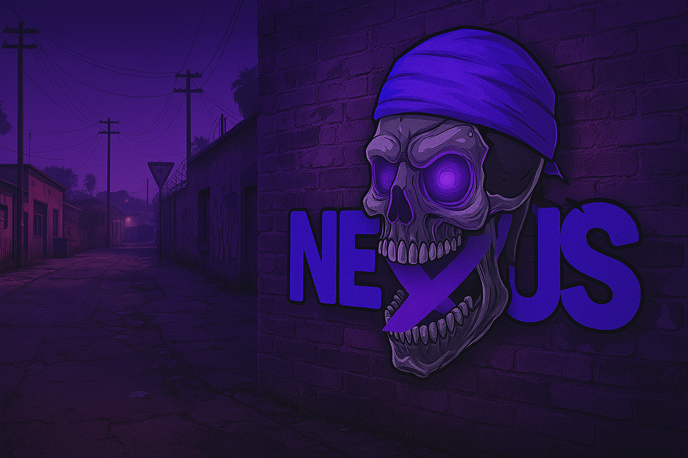

مرحباً بك في NEXUS CITY
السرفر الأقوى في عالم الـ FiveM
السرفر الأقوى في عالم الـ FiveM
يجب على جميع اللاعبين قراءة والالتزام بهذه القوانين. عدم المعرفة بالقوانين ليس عذراً لكسرها.
تقمص الشخصية داخل الرول بلاي سواء كانت شخصيتك - مسعف,عسكري,عصابة,مواطن سواء شاب او رجل مسن
يجب عليك تقدير موقفك في اي حالة كانت متواجد فيها
يمنع منعا باتا استخدام المركبة كسلاح
يمنع منعا باتا القتل العشوائي
-يحق لأدارة السيرفر التصرف بما تراه مناسباً في حال المخالفة
المناطق الآمنة التي يمنع فيها أي عمل إجرامي:
يمنع فيها منعاً باتا جميع أنواع الإجرام والشغب مثل حمل السلاح وسرقة السيارات وضرب المواطنين (بوكسات) أو بسلاح أبيض والإستفزاز ومقاومة الشرطة أو تهريب المجرمين وعقوبة المخالفة فيها شديدة جدا..
المحكمة
المستشفيات وحدود شوارعها
مركز الشرطه والمحيط به
الحبس والمحيط به
أماكن فرامات الموارد (اعادة التدوير) ومناطق السكراب (الروابش)
اماكن العمل والوظائف العامة
مراكز الميكانيكا
معارض السيارات
بقالات الي عند سرقه فقط
عدد العصابة: 2-4 أشخاص
شرط وجود: 2 شرطة على الأقل
مدة السرقة: 10 دقائق كحد أقصى
عدد العصابة: 3-5 أشخاص
شرط وجود: 3 شرطة على الأقل
مدة السرقة: 15 دقائق كحد أقصى
يُمنع استخدام الأسلحة الثقيلة
عدد العصابة: 4-6 أشخاص
شرط وجود: 4 شرطة على الأقل
شرط وجود رهينة حقيقية
مدة السرقة: 20 دقائق كحد أقصى
عدد العصابة: 5-8 أشخاص
شرط وجود: 5 شرطة على الأقل
شرط وجود رهينة حقيقية
يُشترط تخطيط كامل وتنسيق داخلي واضح
مدة السرقة: 30 دقائق كحد أقصى
يُسمح بها مرة واحدة كل 24 ساعة
عدد العصابة: 4-6 أشخاص
شرط وجود: 4 شرطة على الأقل
يجب إيقاف الشاحنة أولاً بطريقة واقعية
مدة السرقة: 15 دقائق كحد أقصى
تستطيع خطف اي مواطن لاخذه رهينة في سيناريو فقط ولا يحق لك سرقته
وجود عداوة مسبقة بينكما ويجب ان تكون مثبتة بمقطع فيديو ويحق لك سرقته أو اخذه رهينة في سيناريو أو حتى قتله
يجب على المخطوف تقمص شخصية الرهينة
لايحق للمجرمين قتل الرهينة اذا تم الاتفاق بينهم وبين الشرطة
الحد الاقصى لطلب مبلغ تحرير رهينة واحدة هي 2000$
يمنع قتل الاشخاص طالما كانوا ينفذون اوامرك
يمنع مشاركة الرهينة مع السارقون في السيناريو
يمنع منعاً باتاً المفاوضة على رهينة غير موجودة في موقع السرقة
يحق للمجرم قتل الرهينة فقط في حال عدم الاتفاق مع الشرطة اثناء التفاوض
ممنوع طلب شرطة او تاكسي او ميكانيكي وخطفهم
اذا خطفت مواطن واصبح رهينه ، لديك فقط 15 دقيقة منذ خطفه. الا في حالة بدأت السرقة
في حال تهديد مواطن وهروبه لاحد المناطق الآمنة يحق لك تهديده وخطفه فيها او قتله الا عند هروبه لمركز الشرطة والمستشفى
يجب تقدير حياتك وعدم مقاومة الاشخاص الاكثر منكم عدد
يمنع منعا باتا اختطاف رهينة بالاتفاق سواء كان مع صديقك او غيره كاعطاءه جزء من المبلغ
ممنوع انك تخطف وقدامك زحمة لازم قبلها تتاكد انه مافيش عساكر ولا زحمة
يمنع منعاً باتاً مقاومة شخص وجه عليك سلاح ناري بالقرب منك قبل اظهر سلاحك مهما كان نوع سلاحك
يمنع مقاومة شخص وجه سلاح أبيض عليك "بشرط انه قريب جدا منك"
يمنع مقاومة شخص لديه سلاح ناري و بـ سلاح أبيض